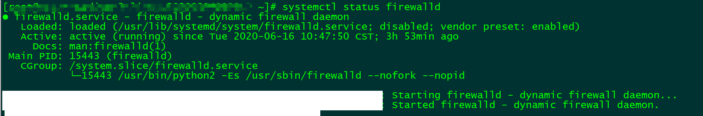

CentOS7防火墙配置
centos7版本对防火墙进行加强,不再使用原来的iptables,启用firewalld
防火墙状态
通过systemctl status firewalld查看firewalld状态
systemctl status firewalld

发现当前是dead状态，即防火墙未开启。
开启防火墙
通过systemctl start firewalld开启防火墙，没有任何提示即开启成功
systemctl start firewalld

再次通过systemctl status firewalld查看firewalld状态，显示active（running）即已开启了
关闭防火墙
如果要关闭防火墙设置，可能通过
systemctl stop firewalld
这条指令来关闭该功能，没有任何提示则关闭成功
禁用防火墙
systemctl disable firewalld
开启端口
执行
firewall-cmd --zone=public --add-port=80/tcp --permanent
提示success，表示设置成功
参数解释
–zone #作用域
–add-port=80/tcp #添加端口，格式为：端口/通讯协议
–permanent #永久生效，没有此参数重启后失效
这里的端口哪怕不对外，只要用到就得开。 比如说我3306的mysql端口,不对外(比如远程连接，只本地应用连接),如果没开,本地的程序也是连不上的,必须先开端口才能连上。 如果怕mysql攻击, 云服务器可以在安全组上不提供3306的入方向规则,只防火墙开端口，这样别人也是连不上的，但是本地程序可以连
禁用端口
firewall-cmd --zone= public --remove-port=80/tcp --permanent # 删除
查看端口
执行
firewall-cmd --permanent --query-port=80/tcp
提示yes，即表示该端口开启,否则未开启
查看当前开放端口
firewall-cmd --list-ports
重启防火墙:更新规则
firewall-cmd --reload
提示success即执行成功
这一步非常重要，因为我之前就因为只开了端口，没重启导致jenkins服务无法访问，排查了半天
通过命令发现Jenkins是启动的，但是访问不了。 结果通过命令firewall-cmd --list-ports看到开放的端口和我设置的不一样,才发现忘记执行防火墙重启 了 ，重启之后就行了
在每次修改端口和服务后/etc/firewalld/zones/public.xml文件就会被修改,所以也可以在文件中之间修改,然后重新加载 使用命令实际也是在修改文件，需要重新加载才能生效。
This blog is under a CC BY-NC-SA 3.0 Unported License
本文链接：http://hogwartsrico.github.io/2020/06/16/CentOS7Firewall/